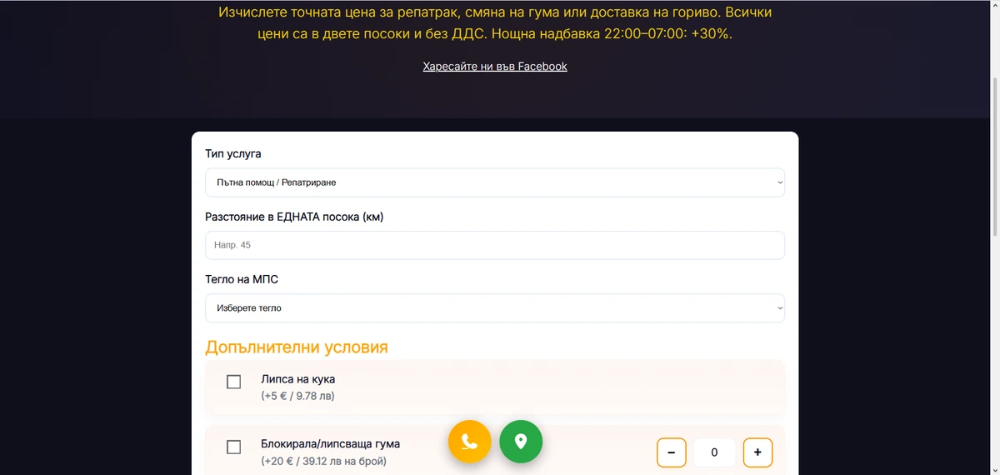
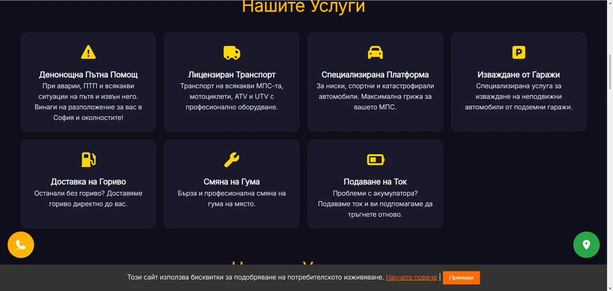

Multi-location SEO без WordPress: как 14 HTML страници носят локален трафик
Време за четене: ~8 минути
📅 Публикувано: • От: MOVER Studio
Искаш да се класираш за „услуга + квартал“ в София (или друг град)? Един homepage не стига. Multi-location SEO изисква отделна, индексируема страница за всяка локация — с уникален title, H1 и съдържание.
При roadassistancesofia.bg това са 14 HTML страници — без WordPress, без бавни плъгини.
Обясняваме модела, защо статичен HTML го прави по-евтино и по-бързо от CMS, и кога ти трябва такава архитектура.
Бърз отговор: Multi-location = отделен URL за всяка локация, canonical структура, schema LocalBusiness. Добавка +200€ (не е в базовите 1000€ корпоративен пакет). Виж корпоративен сайт и SEO оптимизация.
Какво е multi-location SEO архитектура
Вместо една страница „Контакти“ с адрес, правиш:
- Хъб страница — общ преглед на услугата в целия град
- Локални landing страници — „пътна помощ Младост“, „пътна помощ Люлин“ и т.н.
- Уникален meta title, H1, текст и schema за всяка URL
- Вътрешно свързване: хъб → локални → контакт
Google индексира всяка страница отделно. Търсенето „услуга + квартал“ попада на релевантен URL — не на общ homepage.
Защо статичен HTML бие WordPress за локални страници
| Фактор | HTML (статичен) | WordPress |
|---|---|---|
| Скорост | Цел 100 PageSpeed на всяка страница | Често 40–70 mobile |
| 14 локации | 14 леки файла, еднакъв шаблон | 14 записа + DB заявки + плъгини |
| Поддръжка | Управлявани ъпдейти от екипа | Актуализации, сигурност, плъгини |
Кейс: roadassistancesofia.bg
Проект за пътна помощ в София с 14 локационни страници — всяка оптимизирана за конкретен район. Резултат: покритие на long-tail заявки без един претрупан homepage.


Пълен разбор: case studies · изработка на сайтове София
Кога ти трябва multi-location SEO
- Услуга с търсене по квартал/град (пътна помощ, ВиК, климатици, доставка)
- Повече от един физически обект или зона на обслужване
- Искаш да мащабираш видимостта без да плащаш за отделни домейни
Не ти трябва, ако имаш един магазин и един адрес — достатъчна е сайт визитка.
Следваща стъпка
Искаш локални страници за София или цяла България? Виж корпоративния пакет или питай за multi-location добавка.
Често задавани въпроси
Колко локационни страници мога да имам?
Типично 5–15 в корпоративен пакет; при roadassistancesofia.bg — 14. Повече се договаря индивидуално.
Колко струва multi-location SEO?
Добавка +200€ към проект. Не е включена в базовия корпоративен пакет от 1000€.
Работи ли за извън София?
Да — отделен URL на град или квартал, независимо от локацията в България.
Нужен ли е WordPress за много страници?
Не. Статичен HTML е по-бърз и по-евтин за поддръжка при много локални URL.
Колко време до индексация?
Техническата основа е готова при пускане; органични позиции — седмици до месеци според конкуренцията.
Накратко: Multi-location SEO = много леки HTML страници, всяка за една локация. По-бързо и по-евтино за поддръжка от WordPress мрежа от landing страници.